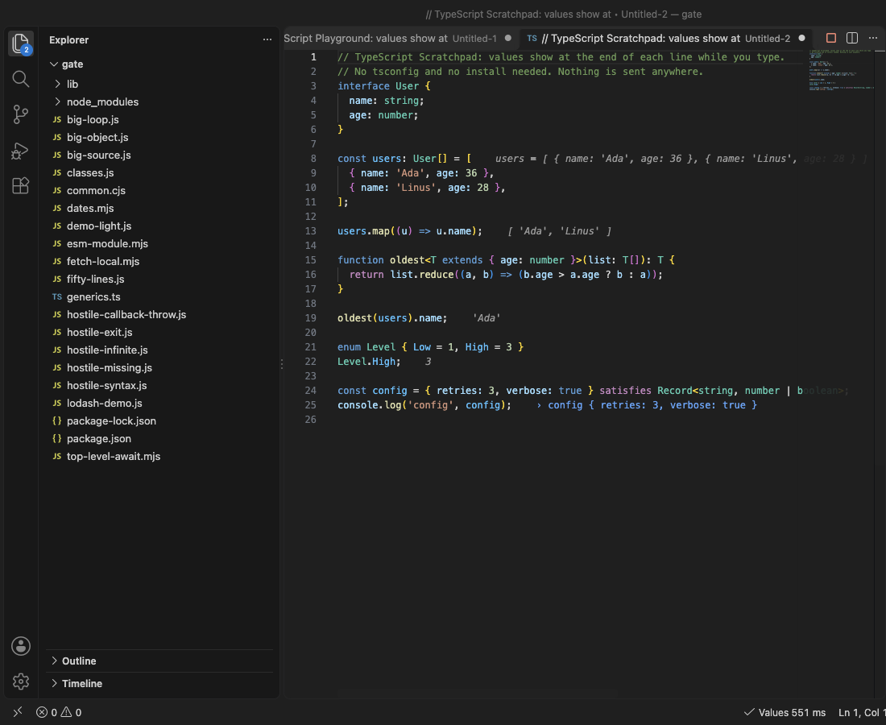
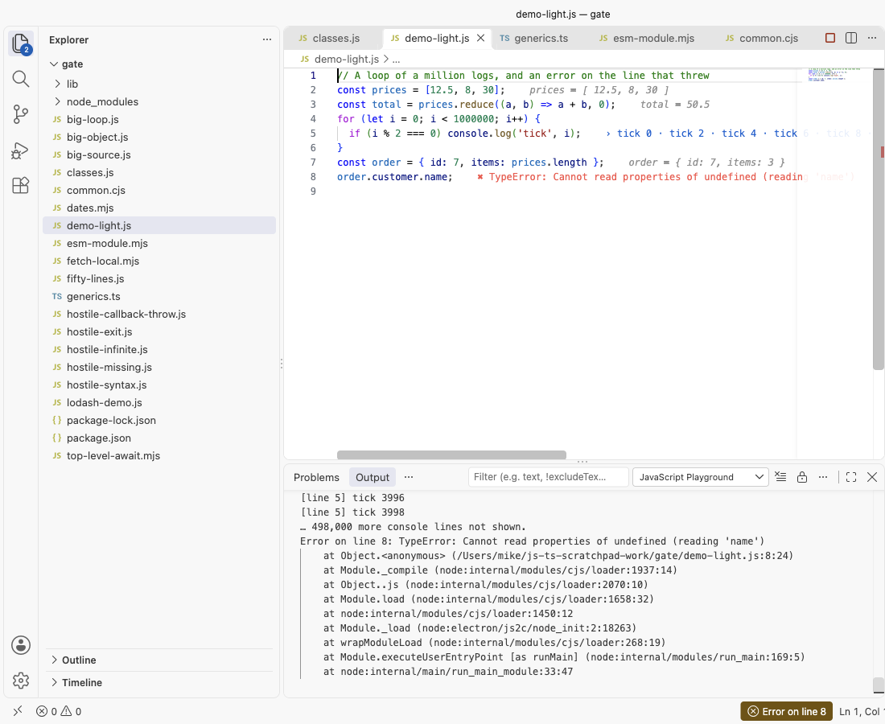

JavaScript Playground & TypeScript Scratchpad with Inline Values (Live JS and TS Runner)
JavaScript Playground & TypeScript Scratchpad with Inline Values (Live JS and TS Runner), a VS Code extension by Zovo
Type JavaScript or TypeScript and see the value of each line at the end of that line, while you type. console.log output and errors land on their own lines too. Free, no sign-in, works offline. No popups, no "what's new" page, no ads.
Free, MIT license. Needs VS Code 1.90.0 or newer. Extension ID zovo.zovo-js-ts-scratchpad, version 0.2.2.

- Open a scratchpad in one click: New JavaScript Scratchpad or New TypeScript Scratchpad. Values show in under a second.
- Or click Inline Values in the status bar of any
.js,.mjs,.cjs,.ts,.mtsor.ctsfile. Imports andrequireresolve from that file's folder and yournode_modules. - TypeScript with no setup: no tsconfig, no install. Types, interfaces, generics, enums and
satisfiesjust work. - Safe by design: each run is a fresh process with a time limit (5 s) and a memory limit. An endless loop is stopped and VS Code stays responsive.
Questions people ask
Is JavaScript Playground & TypeScript Scratchpad with Inline Values (Live JS and TS Runner) free?
Yes. JavaScript Playground & TypeScript Scratchpad with Inline Values (Live JS and TS Runner) is free and MIT licensed.
How do I install JavaScript Playground & TypeScript Scratchpad with Inline Values (Live JS and TS Runner)?
Click "Install in VS Code" above, or search for zovo.zovo-js-ts-scratchpad in the Extensions view.
Start in ten seconds
- Open the Command Palette (
Cmd+Shift+PorCtrl+Shift+P) and run JavaScript Playground, New JavaScript Scratchpad. - Change a number. The values update about 300 ms after you stop typing.
That is all. The Get Started page (JavaScript Playground, Get Started) shows the same steps with buttons.
What you see
| On the line | Example |
|---|---|
| The value of an expression | nums.sort() shows [ 1, 2, 3 ] |
| The value of a new variable | const total = 42 shows total = 42 |
console.log, info, warn, error, table, dir | › n is 3 |
| A promise | Promise → 42 once it settles |
| A loop | 0 · 1 · 2 · 3 … (+999,996 more) |
| An error | ✖ TypeError: Cannot read properties of undefined on the line that threw |
Hover a value to see more of it (objects to depth 2, long values in full up to 2,000 characters). The JavaScript Playground output panel has the full console output and each error's stack, with your file's real path and line numbers. Click the status bar item to open it.

Large output and hostile code
- A loop that logs a million times keeps the first 100 values of each line and counts the rest. The output panel keeps the first 2,000 lines of each run. The editor stays fast and the extension's memory stays flat.
while (true) {}is stopped at the time limit (settingjsScratchpad.timeoutSeconds), with a clear message on the line.process.exit(), a throw inside a callback, an unhandled promise rejection and a missing module all show on their line. A syntax error while you type shows on its line and the last values stay.- Large objects print to depth 2 with the first 50 items of arrays, maps and sets, and the first 50 keys of very wide objects.
- Files over 100 KB are prepared in a background thread, so typing never waits. Files over 512 KB run when you save instead of on every key press.
Settings
| Setting | Default | What it does |
|---|---|---|
jsScratchpad.runOn | change | Run after each edit, or only on save |
jsScratchpad.debounceMs | 300 | Wait after the last key press |
jsScratchpad.timeoutSeconds | 5 | Stop a run after this long |
jsScratchpad.memoryLimitMB | 1024 | Memory limit of each run |
jsScratchpad.runtime | vscode | VS Code's own Node.js, or node from your PATH (any version you have) |
jsScratchpad.nodePath | empty | Full path of a node program |
jsScratchpad.moduleType | auto | ES module or CommonJS; require and top-level await work in both |
jsScratchpad.maxValuesPerLine | 100 | Values kept per line before it only counts |
jsScratchpad.scratchFolder | empty | Save new scratchpads in a folder instead of untitled tabs |
Other commands: Run Now, Stop Inline Values, Clear Values, Show Console Output, Show All Values of This Line (every value a loop line took), Copy Code with Values as Markdown, Show Which Lines Ran.
Why this one
Rival reviews and issues from 2025 and 2026 name the same problems again and again. This extension was built to fix them, and each fix was checked in a real VS Code.
| What users reported | Where | Here |
|---|---|---|
| "using notifications and the 'what's new' page to constantly advertise" (May 2025); notifications that advertise other services (Nov 2025, Jan 2025) | reviews of a popular scratchpad extension | 0 notifications and 0 promotion during our real VS Code test of 17 files and 2 scratchpads (counted). No what's-new page. The only message it can ever show by itself is one rating question, at most twice in total, after several days of use; one setting turns it off. |
| "For beginners, this does not work at all. No instructions on how to view logs" (Oct 2025) | same reviews | One click opens a scratchpad that already shows values, logs on their lines and a status bar item that opens the full log. Measured in real VS Code: values on screen about 0.5 s after the command. |
| "node v22.17.1 is not yet supported in the Community edition" (Aug 2025) | reviews of a console log extension | No Node version check at all. It runs on the Node.js inside VS Code (no install), or on any node you point it to. |
| TypeScript needs setup | TypeScript runs with no tsconfig and no install; types are removed on the fly with exact line numbers. |
This extension is not made by, and does not replace, the extensions linked above.
Privacy and safety
- The extension makes no network calls and has no telemetry. Your own code may use the network when you run it, like any script.
- In Restricted Mode (a folder you have not trusted) no code runs, and the editor says why.
- Your code runs as a separate process on your computer, from a temporary copy that is deleted after each run. It can read and write files like any Node.js script, so only run code you trust.
Free
Every feature is free: no account, no trial, no limits.
Limits
- Values show for expression statements and new variables, not inside every sub-expression.
.jsxand.tsxfiles are not run. A.tsfile that imports another.tsfile needs Node 22.6 or newer as your node (settingjsScratchpad.runtime), because the imported file is not converted.- Browser APIs like
documentdo not exist; this is Node.js.
Guides
- Run a JavaScript or TypeScript snippet in VS Code
- JavaScript Playground Online, free in your browser with no upload
Install JavaScript Playground & TypeScript Scratchpad with Inline Values (Live JS and TS Runner)
Click the button to open VS Code and install it, or press Ctrl+P (Cmd+P on macOS) in VS Code and run ext install zovo.zovo-js-ts-scratchpad.
Free, MIT license. Needs VS Code 1.90.0 or newer. Extension ID zovo.zovo-js-ts-scratchpad, version 0.2.2.
Source code and issues are on GitHub.
Zovo Pro and support
Zovo Pro: USD 19 once, every Zovo viewer. It turns on the Pro tools in this extension and in the other Zovo extensions you use. The free features stay free.
After a card payment your license key shows on the next page. Paste it with the command "Zovo Pro: Enter a key".
You can also support the work with no Pro:
Need your format supported?
Open a format request with a sample file, and I reply there whether it can be done. For USD 299 once, through this GitHub Sponsors tier, I add your file format or a missing feature to this extension, with tests, within 7 days.